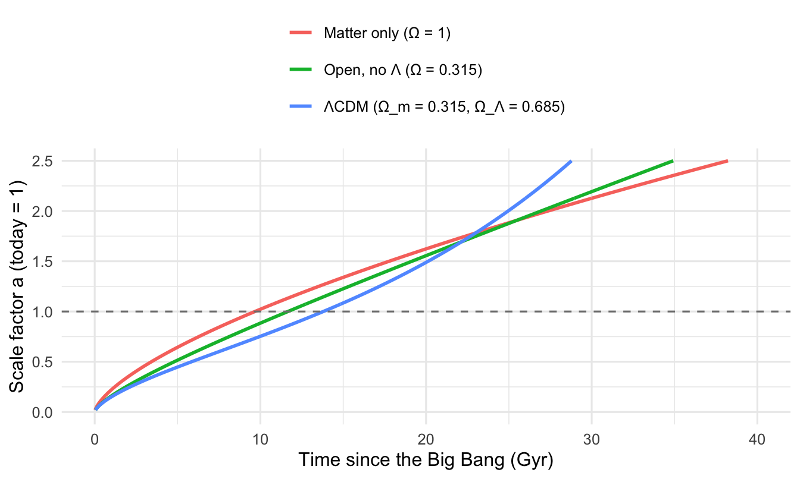
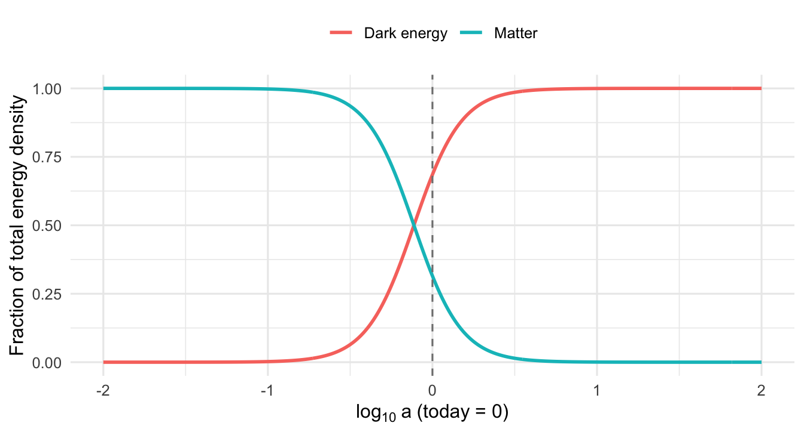

The dimensionless constants that shaped the universe, and the astronomer who put them together
A profile of Martin Rees and a worked tour of the six numbers from Just Six Numbers (N, epsilon, Omega, lambda, Q and D): what each means, the equations behind it, and what changes if it were different.
cosmology
history-of-science
fine-tuning
Author
Paul Milne
Published
October 18, 2026
In 1999 the astrophysicist Martin Rees published a short book, Just Six Numbers, built around a claim that is easy to state and hard to dismiss: the large-scale structure of the universe, and its ability to contain anything as intricate as life, depends on six dimensionless numbers. None of them is predicted by any current theory. Change any one by a modest amount and the universe would look utterly different.
This post introduces Rees himself, then goes through the six numbers one at a time, with the physics behind each and a short calculation in R.
Who is Martin Rees?
Martin Rees was born in York in 1942 and studied mathematics at Trinity College, Cambridge. He completed his PhD in 1967 under Dennis Sciama, whose students over the years included Stephen Hawking, George Ellis and Brandon Carter. That group worked on general relativity and cosmology at a time when the subject was moving from speculation to observation. He has spent most of his career in Cambridge, as Plumian Professor of Astronomy and Experimental Philosophy from 1973, Astronomer Royal since 1995, Master of Trinity College from 2004 to 2012, and President of the Royal Society from 2005 to 2010. He became a life peer, Baron Rees of Ludlow, in 2005, was appointed to the Order of Merit in 2007, and received the Templeton Prize in 2011.
His research output is unusually broad. A few landmarks, all from my memory of the literature and worth checking against the references:
Superluminal motion (1966). Rees showed that jets from quasars moving close to the speed of light at a small angle to our line of sight can appear to move faster than light. No physics is violated; it is a light-travel-time effect.
Evolving radio sources. In the 1960s, with Sciama, he worked on how the numbers of distant radio sources and quasars change with cosmic time, evidence that the universe evolves, as the Big Bang picture says and the steady-state model does not.
The Rees–Sciama effect (1968). Light crossing a changing gravitational potential, such as a collapsing cluster, picks up a small net energy shift. This is a tiny signature on the cosmic microwave background.
Radio galaxies and black holes (1970s–80s). With Roger Blandford he developed the “twin-exhaust” model in which jets carry energy from a galactic nucleus to giant radio lobes. His wider reviews established the picture of supermassive black holes powering active galactic nuclei.
Galaxy formation. With Jeremiah Ostriker (1977) he studied how gas cools and collapses to form galaxies, and with Blumenthal, Faber and Primack (1984) he helped establish cold dark matter as the framework for structure formation.
Gamma-ray bursts. With Péter Mészáros he developed the fireball model of gamma-ray bursts and their afterglows in the early 1990s.
He is also a prolific author for general readers: Before the Beginning (1997), Just Six Numbers (1999), Our Cosmic Habitat (2001), Our Final Hour (2003, published in the UK as Our Final Century) and On the Future (2018). He gave the BBC Reith Lectures in 2010 and co-founded Cambridge’s Centre for the Study of Existential Risk in 2012. The theme running through the later work is that the cosmos is far larger and older than we usually keep in mind, and that humanity’s own future is much less settled than the cosmos’s.
The anthropic thread
The six-numbers argument has a lineage. In 1961 Robert Dicke observed that the age of the universe cannot be arbitrary if observers like us are to exist. In 1974 Brandon Carter, Rees’s Cambridge contemporary, gave the idea a name, the anthropic principle. In 1979 Rees and Bernard Carr wrote a long Nature review, “The anthropic principle and the structure of the physical world”, which assembled the evidence that many features of physics seem tuned to allow complex structure. The Hoyle carbon resonance (covered in the stellar nucleosynthesis post) is one of its classic examples. Just Six Numbers is the popular distillation of that programme.
The six numbers
Symbol
Name
Approximate value
\(N\)
Ratio of electric to gravitational force between two protons
\(10^{36}\)
\(\varepsilon\)
Fraction of mass released when hydrogen fuses to helium
\(0.007\)
\(\Omega\)
Matter density relative to the critical density
\(\approx 0.3\)
\(\lambda\)
Dark-energy (cosmological constant) density relative to critical
\(\approx 0.7\)
\(Q\)
Amplitude of primordial density fluctuations
\(\approx 10^{-5}\)
\(D\)
Number of spatial dimensions
\(3\)
Rees groups them: \(N\) and \(\varepsilon\) govern small-scale physics (atoms, stars), \(\Omega\), \(\lambda\) and \(Q\) govern the large-scale cosmos, and \(D\) sets the framework in which everything operates.
1. \(N \approx 10^{36}\): the weakness of gravity
Two protons repel each other electrically and attract each other gravitationally. The ratio of the two forces does not depend on distance, since both fall off as \(1/r^2\):
\[
N = \frac{e^2/(4\pi\varepsilon_0)}{G m_p^2}.
\]
N <- e_chg^2/ (4* pi * eps0 * G * m_p^2)alpha <-1/137.036alpha_G <- alpha / N # G m_p^2 / (hbar c)M_star <- alpha_G^(-3/2) * m_p # characteristic stellar massc(N = N, alpha_G = alpha_G, M_star_in_Msun = M_star / Msun)
N alpha_G M_star_in_Msun
1.235702e+36 5.905432e-39 1.853019e+00
So \(N = 1.2 \times 10^{36}\). Gravity is feeble compared with electromagnetism, and that is why large objects are needed for it to matter. A characteristic stellar mass comes out of dimensional analysis alone, where \(\alpha_G = G m_p^2/\hbar c = \alpha/N\):
That is a stellar mass, so \(N\) is why stars are about the size they are. Since \(M_\star \propto N^{3/2}\), a universe with gravity \(10^6\) times stronger (\(N \sim 10^{30}\)) would have stars about a billion times lighter.
Lifetimes. The standard result for radiative stars is \(L \propto G^4 M^3\), so a star’s lifetime goes as \(t \sim M/L \propto G^{-4}M^{-2}\). Combined with \(M_\star \propto G^{-3/2}\) this gives \(t_\star \propto G^{-1} \propto N\). A million-fold stronger gravity therefore shortens stellar lifetimes about a million-fold, from roughly \(10^{10}\) years to roughly \(10^4\). That’s Rees’s “Lilliputian universe”: there would be no time for evolution to do anything.
Figure 1: How characteristic stellar mass and lifetime scale with N (equivalently, with 1/G), normalised to our universe. Stronger gravity means smaller, shorter-lived stars.
Going the other way, a much larger\(N\) (weaker gravity) gives huge, cool, slowly evolving stars, and galaxies would struggle to form from gas that is so slow to collapse. Rees’s point is that life needs something like our value, not an order of magnitude here or there.
2. \(\varepsilon \approx 0.007\): the efficiency of fusion
When four hydrogen nuclei fuse into one helium-4 nucleus, a fraction \(\varepsilon\) of their mass is converted to energy:
That gives \(\varepsilon =\)0.0071. It is set by the strong nuclear force, and it fixes how long stars shine: a star’s nuclear fuel supply is roughly \(\varepsilon M c^2\), so lifetime is proportional to \(\varepsilon\) at fixed luminosity. Beyond that, it determines what the hydrogen-burning chain can do at all. The chain starts with deuterium, and its stability depends on the strength of the nuclear force. Rees’s examples are qualitative:
With \(\varepsilon\) around 0.006, the first step toward helium would not proceed, so the universe would stay hydrogen and no heavier elements, and no chemistry, would be made.
With \(\varepsilon\) around 0.008, nearly all hydrogen would have been fused in the early universe, leaving no hydrogen for water or long-lived stars.
These are Rees’s illustrations of sensitivity, and I haven’t derived them here. Detailed nuclear calculations in the literature find that the range of habitable values is somewhat wider than such sharp statements suggest, but still narrow.
3. \(\Omega \approx 0.3\): how much matter
The expansion of a homogeneous universe obeys the Friedmann equation
The critical density is the value of \(\rho\) for which a universe with \(\Lambda=0\) is spatially flat, \(\rho_c = 3H_0^2/8\pi G\), and \(\Omega = \rho/\rho_c\).
The critical density is about \(8.5 \times 10^{-27}\) kg m\(^{-3}\), equivalent to roughly 5.1 protons per cubic metre. The measured density of ordinary matter plus dark matter is about 0.3 of that, so \(\Omega_m \approx\) 0.315.
The flatness problem. If \(\Omega\) is not exactly 1 at the start, it runs away from 1 as the universe expands. Writing the deviation as \(|\Omega^{-1}-1| = |k|c^2/(a^2H^2)\), one can compute how finely the early universe had to be balanced to leave \(\Omega\) of order unity today:
At nucleosynthesis (\(z \sim 10^{10}\), about a second after the Big Bang) the universe had to be flat to within about \(1 \times 10^{-16}\) of whatever it is today. Too much matter and the universe would have collapsed in a fraction of a second; too little and it would have expanded too quickly for galaxies to form. Inflation, proposed in the early 1980s, offers a mechanism that drives the universe toward flatness automatically, and it is one reason Rees treats \(\Omega\) as less mysterious than the other numbers.
4. \(\lambda \approx 0.7\): the cosmological constant
Until the late 1990s most cosmologists assumed that \(\Lambda = 0\). Then supernova surveys (Riess et al. 1998; Perlmutter et al. 1999) showed that the expansion is accelerating, which requires a repulsive component, the cosmological constant or dark energy. It is parametrised as \(\Omega_\Lambda = \Lambda c^2/(3H_0^2) \approx 0.7\), Rees’s \(\lambda\).
With \(\Omega_m + \Omega_\Lambda = 1\) the Friedmann equation can be integrated for the age and the history of the scale factor:
The flat ΛCDM age is 13.8 Gyr, which is comfortably older than the oldest stars. A matter-only universe with the same \(H_0\) would be only 9.7 Gyr old, an awkward conflict that was one of the early hints for \(\Lambda\). Acceleration began at \(z \approx\) 0.63, and matter and dark energy had equal densities at \(z \approx\) 0.3.
a_grid <-seq(0.02, 2.5, length.out =300)mods <-tibble(model =c("Matter only (Ω = 1)", "Open, no Λ (Ω = 0.315)", "ΛCDM (Ω_m = 0.315, Ω_Λ = 0.685)"),Om_ =c(1, Om, Om), OL_ =c(0, 0, OL))curves <-bind_rows(lapply(seq_len(nrow(mods)), function(i) {tibble(model = mods$model[i], a = a_grid, t =t_of_a(a_grid, mods$Om_[i], mods$OL_[i]))}))ggplot(curves, aes(t, a, colour = model)) +geom_line(linewidth =1) +geom_hline(yintercept =1, linetype ="dashed", colour ="grey50") +coord_cartesian(xlim =c(0, 40), ylim =c(0, 2.5)) +labs(x ="Time since the Big Bang (Gyr)", y ="Scale factor a (today = 1)", colour =NULL) +theme(legend.position ="top") +guides(colour =guide_legend(nrow =3))

Figure 2: Scale factor against cosmic time for three universes with the same present-day Hubble constant. Only the model with a cosmological constant is old enough and ends up accelerating.
Why is \(\lambda\) interesting? Two reasons. First, it is absurdly small compared with what particle physics naively suggests. Vacuum energy computed with a Planck-scale cutoff is about \(\rho_P = c^5/(\hbar G^2)\):
rho_P <- c_ms^5/ (hbar * G^2)rho_L <- OL * rho_cc(rho_Planck = rho_P, rho_Lambda = rho_L, ratio = rho_L / rho_P)
rho_Planck rho_Lambda ratio
5.155823e+96 5.845184e-27 1.133705e-123
The observed dark-energy density is smaller than the Planck density by a factor of about \(1 \times 10^{-123}\): roughly 120 orders of magnitude, a famous failure of naive estimates. Second, Steven Weinberg noted in 1987 that if \(\Lambda\) were much larger than observed, repulsion would have stopped structure forming before galaxies could assemble. That anthropic bound is what pointed toward a small, non-zero value before the supernova results, and it is the kind of argument Rees treats seriously.
co <-tibble(loga =seq(-2, 2, length.out =400)) |>mutate(a =10^loga,matter = Om * a^-3/ (Om * a^-3+ OL),dark_energy =1- matter) |> tidyr::pivot_longer(c(matter, dark_energy), names_to ="component", values_to ="fraction") |>mutate(component =recode(component, matter ="Matter", dark_energy ="Dark energy"))ggplot(co, aes(loga, fraction, colour = component)) +geom_line(linewidth =1) +geom_vline(xintercept =0, linetype ="dashed", colour ="grey50") +labs(x =expression(log[10]~a~"(today = 0)"), y ="Fraction of total energy density", colour =NULL) +theme(legend.position ="top")

Figure 3: Matter and dark-energy fractions as the universe expands. Dark energy is negligible at early times and dominates at late times; we happen to live near the crossover.
5. \(Q \approx 10^{-5}\): how lumpy was the early universe?
The cosmic microwave background is uniform to about one part in \(10^5\). Those tiny temperature ripples correspond to density fluctuations of a similar relative size, and Rees calls their amplitude \(Q\). Gravity amplifies them: in a matter-dominated universe, small perturbations grow in proportion to the scale factor. In a universe with dark energy the growth factor \(D(a)\) obeys
growth_D <-function(a, Om, OL) {sapply(a, function(x) 2.5* Om *E_a(x, Om, OL) *integrate(function(y) 1/ (y *E_a(y, Om, OL))^3, 1e-8, x)$value)}D_today <-growth_D(1, Om, OL)D_today
[1] 0.7878126
Today \(D(1) =\) 0.79: dark energy has already throttled structure growth by about 21% relative to a matter-only universe.
Figure 4: Linear growth factor of density perturbations against scale factor. Growth tracks the matter-only line (dashed) until dark energy takes over, then stalls.
In this picture a region collapses into a bound structure once its linear overdensity reaches about 1.7, so the redshift at which structures of a given size form scales in proportion to their initial amplitude. That is why \(Q\) matters so much:
If \(Q\) were much smaller (around \(10^{-6}\)), gas clouds would take far longer to contract. Galaxies would form late, if at all, and their stars would be diffuse, so supernova ejecta could escape and no second generation of enriched stars would form.
If \(Q\) were much larger (around \(10^{-4}\)), structure would form very early and densely. Galaxies would be compact enough for stars to collide, and many would collapse to giant black holes.
Our value gives galaxies that are big enough to retain heavy elements and sparse enough that planetary systems survive. This post doesn’t compute the full structure-formation calculation; the scaling above is only the heart of it.
6. \(D = 3\): dimensions of space
Why three? Paul Ehrenfest’s 1917 analysis shows that the stability of orbits singles out \(D=3\). In \(D\) spatial dimensions Gauss’s law makes a central force fall off as \(r^{-(D-1)}\) and the potential as \(r^{-(D-2)}\). For a particle with angular momentum \(L\) the effective potential is
A stable circular orbit needs a minimum of \(V_{\mathrm{eff}}\).
\(D=3\): the attractive \(-k/r\) is overtaken by the centrifugal \(r^{-2}\) term at small \(r\), producing a stable minimum. Planets can orbit stars.
\(D=4\): both terms go as \(r^{-2}\). There is no minimum at all: for weak angular momentum a particle spirals into the centre, for strong angular momentum it is flung away.
\(D\ge5\): the attractive term dominates at small \(r\) and the potential is unbounded below. Everything collapses.
Figure 5: Effective potential for gravity in 3, 4 and 5 spatial dimensions (units with L²/2m = 0.5 and k = 1). Only D = 3 has a stable orbital minimum; the same argument applies to electrons around nuclei.
The same argument applies to the Schrödinger equation: in four or more spatial dimensions, hydrogen-like atoms have no stable ground state, so there would be no chemistry. Fewer dimensions have their own problems: in \(D=2\) the gravitational potential is logarithmic, orbits are not closed, and a body can never escape. Max Tegmark’s 1997 survey of these arguments is a good modern treatment.
How seriously should we take all this?
It is worth being clear about what the six-numbers argument does and does not establish.
What it shows is sensitivity: with physics otherwise unchanged, the outcome of these numbers is not robust to large changes. Those scaling arguments, such as \(M_\star \propto N^{3/2}\), the flatness calculation and the orbital stability of \(D=3\), are straightforward calculations.
What it does not show is that the numbers had to be tuned by something. For that you need a probability distribution over possible values of constants, and nobody has a principled one. Critics, among them Lee Smolin and Sabine Hossenfelder, argue that “fine-tuning” is not well-defined without such a measure, and some of the numbers (like \(\Omega\)) may have explanations through dynamics like inflation.
Rees’s own response is to take the multiverse seriously: if a very large ensemble of universes exists with different values of \(N\), \(\varepsilon\), \(Q\) and so on, then finding ourselves in one that permits observers is no surprise. He is open that this is a hypothesis, not a result, and that it remains controversial.
Whichever view you prefer, the numbers provide a clear way to ask what a universe is made of at the deepest level. That is why the book has been durable.
Takeaways
\(N \approx 10^{36}\) sets how big stars are and how long they live: \(M_\star\propto N^{3/2}\) and \(t_\star\propto N\).
\(\varepsilon \approx 0.007\) is the fraction of mass released by hydrogen fusion; Rees’s examples show it sits in a narrow window.
\(\Omega\approx0.3\) and \(\lambda\approx0.7\) govern the expansion history. The flatness calculation shows the early universe was balanced to about one part in \(10^{16}\), and \(\lambda\) is about \(10^{-123}\) of the naive Planck-scale value.
\(Q\approx10^{-5}\) sets when and how densely galaxies form.
\(D=3\) is singled out by the stability of orbits and atoms.
The sensitivity arguments are solid. What they mean is still debated.
References
Rees, M. (1999). Just Six Numbers: The Deep Forces That Shape the Universe. Weidenfeld & Nicolson.
Carr, B. J., & Rees, M. J. (1979). The anthropic principle and the structure of the physical world. Nature 278, 605.
Rees, M. J., & Sciama, D. W. (1968). Large-scale density inhomogeneities in the universe. Nature 217, 511.
Blandford, R. D., & Rees, M. J. (1974). A “twin-exhaust” model for double radio sources. MNRAS 169, 395.
Rees, M. J., & Ostriker, J. P. (1977). Cooling, dynamics and fragmentation of massive gas clouds. MNRAS 179, 541.
Blumenthal, G. R., Faber, S. M., Primack, J. R., & Rees, M. J. (1984). Formation of galaxies and large-scale structure with cold dark matter. Nature 311, 517.
Mészáros, P., & Rees, M. J. (1993). Relativistic fireballs and their impact on external matter. Astrophysical Journal 405, 278.
Weinberg, S. (1987). Anthropic bound on the cosmological constant. Physical Review Letters 59, 2607.
Riess, A. G., et al. (1998). Observational evidence from supernovae for an accelerating universe. Astronomical Journal 116, 1009.
Perlmutter, S., et al. (1999). Measurements of Ω and Λ from 42 high-redshift supernovae. Astrophysical Journal 517, 565.
Ehrenfest, P. (1917). In what way does it become manifest in the fundamental laws of physics that space has three dimensions? Proc. Amsterdam Academy 20, 200.
Tegmark, M. (1997). On the dimensionality of spacetime. Classical and Quantum Gravity 14, L69.